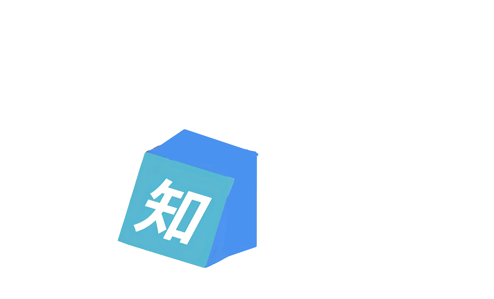
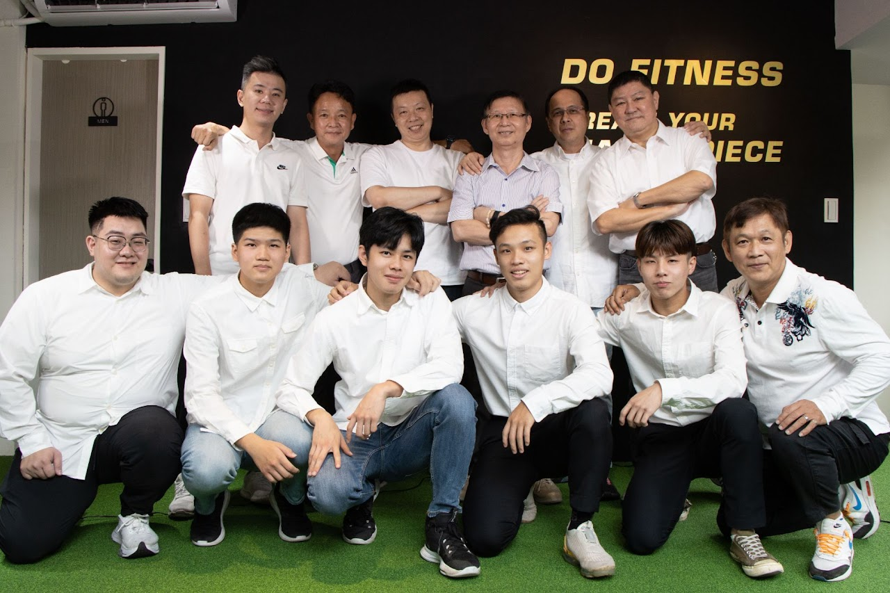

掌握孩子
大腦發展的黃金時刻
結合神經科學與科學化運動訓練，系統性的誘發孩童突觸生長。幫助孩子建立深層身體認知與精確協調，從底層重構大腦執行功能與專注力，讓大腦發育走在黃金發展的最前線。

關於孩子，
您是否也有以下煩惱？
這些擔憂，每天都有家長帶著它來到飛童。
您並不孤單，我們完全理解。
看著同齡孩子靈活跑跳、對答如流，您的孩子卻聽不懂指令、總是活在自己的世界。
孩子頻繁尖叫、失控、甚至出現攻擊行為。每天在外面道歉、在家裡崩潰。
奔波早療多年卻進入停滯期，進步的速度無法達成預期效果。
指令左耳進右耳出，寫作業坐不住、眼神總在飄移。您深怕他不是不聰明，而是因為「靜不下來」輸在了起跑點。
網上資訊紛雜，您不怕花錢，只怕選錯方法。大腦發育只有一次，您最恐懼的是「錯過孩子最寶貴的黃金轉骨期」。

飛童動知覺：
神經科學的三大核心優勢
-
40年實戰經驗，專業腦科學團隊
教學團隊累積超過 40 年大腦科學教育資歷，橫跨兩岸指導數萬名孩童。每位教練擁有數千小時教學經驗，並具備大腦生理專業知識，確保每一個訓練動作都能有效觸發神經連結。
-
因材施教專業測評，提供精準運動處方
透過專業動知覺測評，解析孩子前額葉（執行功能）、小腦（協調平衡）與頂葉（空間感知）的發育現況。我們針對大腦不同部位的發育缺口，量身定制「神經運動處方」，透過高頻率、高精準度的刺激，重塑大腦神經元發展。
-
2對1客製化教學，12 堂課見證突觸優化
循大腦神經可塑性規律，採 2 對 1 高配比輔助，確保孩子在安全的挑戰中達成目標。透過數位化的紀錄與追蹤，我們讓進步數據化，在 12 堂課的黃金週期內，由底層神經反射整合至高階動作計畫，有效提升孩童神經元發展。
家長案例見證：
飛童學員的成長紀錄
ADHD
結合神經科學與動作教育，透過系統性感官統合訓練，強化觸覺、前庭覺與本體覺整合，提升專注力。
- 感覺統合基礎 & 進階訓練
- 粗大動作 & 身體協調發展
ASD
以遊戲化方式引導探索程式世界，從積木到文字編碼，培養運算思維、邏輯分析與解決問題能力。
- Scratch 積木程式設計
- 運算思維與邏輯訓練
AS
結合動知覺評估與學習策略，依孩子特質提供一對一輔導，有效提升學習效率、成績與自我信心。
- 國英數個別化輔導
- 學習策略與記憶技巧
DD
專業教練指導，透過趣味遊戲與肌力訓練，提升心肺耐力、肌耐力與動作協調，讓孩子愛上運動。
- 趣味體能遊戲開發
- 核心肌力與協調訓練
把握孩子的
黃金發展階段
「大腦的成長，源自於精準的動作誘發大腦突觸的生長。」
感覺運動與原始神經整合期
孩子透過感官接收環境刺激，並轉化為最初的神經連結。
建立抬頭、翻身、蠕行、倚坐等基礎，這關乎未來大腦「整合與協調」的能力。
強化聽覺與觸覺的靈敏度，對外界刺激做出適當的神經反饋。著重「感知覺」的精準接收，透過被動與主動的動作誘發，啟動大腦的語言與情緒感知區。
感官探索與空間認知爆發期
小腦發育、平衡覺與突觸爆發連結這階段是大腦神經網絡最忙碌的時刻，動作的精準度直接決定了未來學習的穩定度。
側重走、爬、攀、跨等動態平衡經驗。這能強化小腦的協調功能，為日後的運動根基。
大腦開始將「動作」與「認知」結合。透過豐富的智能運動遊戲，刺激額葉發育，提升孩子解決問題的原始能力。
強化本體覺與前庭覺的協作，讓孩子在挑戰動作的過程中，同步開發語言表達與邏輯萌芽。
綜合運動與心智成熟
前額葉皮質 整合與情緒調控這是孩子從「身體控制」轉向「心智成熟」的黃金期，也是準備銜接學齡教育的關鍵。
高階運動企劃， 落實本體覺與前庭覺的深度統整，讓孩子具備複雜、連續性的動作規劃能力。
透過運動強化大腦的抑制控制